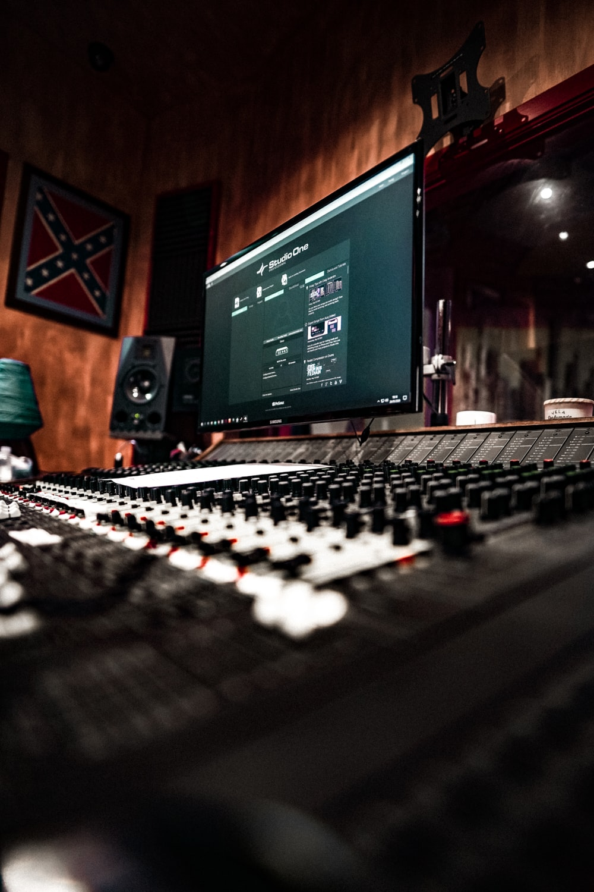

Leo Kain whose real name is Elkhan Mammadov was born in 2005, in Baku, Azerbaijan. His interest in music started when he only had 15. Elkhan started learning by making different types of beats. In 2021 he released his first track "I feel" with his first stage name ELKHVN. Now ELKHVN has more than 2 million views worldwide. He started his passion by making house music. Then in 2022 he changed his stage name to Leo Kain. Leo plans to be one of the popular music producers all over the world.
Now Leo studying and producing at the same time. He tries to use his time correctly. One of his tracks called "Excuses" was published in live set in channel named "Pofiqist Music" which more than 400K people listened to.